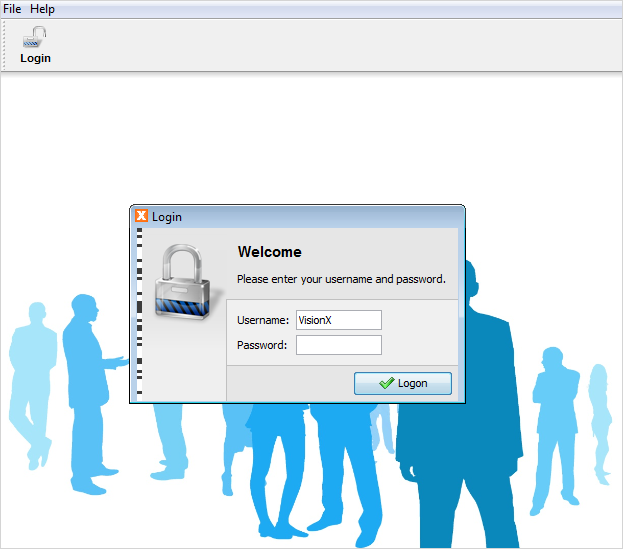
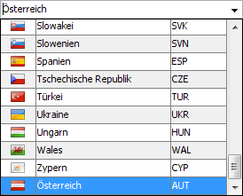

Unmittelbar nach dem Start folgt die Anmeldung an das System.

Danach stehen Ihnen neben den allgemeinen Funktion Programmfunktionen über das Menü, die Toolbar sowie über die Tastatur auch Applikationsspezifischen Funktionen zur Verfügung.
In den folgenden Kapitel werden die allgemeinen Funktionen näher beschrieben. Falls Sie bereits ein erfahrener Windows Benutzer sind, können Sie diese auch überspringen.
Über das Menü stehen Ihnen folgende allgemeine Funktionen zur Verfügung:
Es wird der aktuell angemeldete Benutzer abgemeldet.
(ist wechselweise mit Abmelden sichtbar)
Durch die Eingabe von Benutzername und Passwort erfolgt hier die Anmeldung an das System. Es besteht hier auch die Möglichkeit sich mit einem anderen als dem Windows Domain Benutzer beim System anzumelden.
Mit diesem Menüpunkt werden alle Änderungen seit der letzten „Speichern“ Operation in die Datenbank gespeichert.
Sollten bei der Speicherung Fehler auftreten, wie z.B.: Plausiblitätsprüfungen auf Datenkonsistenz dann wird der betroffene Datensatz bzw. Eingabefeld markiert und eine entsprechende Fehlermeldung ausgegeben. Weiters wird sobald ein Datensatz verlassen wird bzw. wenn eine Maske geschlossen wird, automatisch ohne Rückfrage gespeichert. Sollte die Applikation abnormal beendet werden (z.B.: Explorer wird geschlossen bzw. mit den Task Manager sofort beendet), dann kann es dazu kommen, das die Änderungen in der aktuellen noch nicht verlassenen Zeile verworfen werden und damit nicht gespeichert werden. Daher melden Sie sich am Ende Ihrer Arbeit immer ordentlich vom System ab.
Es werden alle Änderungen seit der letzten Speicherung verworfen und der aktuelle Stand der Daten aus der Datenbank neu in die Applikation geladen. Dies ist bei einer Multiuser Anwendung sinnvoll um die Änderungen der anderen Benutzer sichtbar zu machen.
Mit diesem Menüpunkt kann die Applikation ordentlich verlassen werden.
Mit dieser Funktion kann zwischen Karteireiter Ansicht und klassicher Windows Fenster Ansicht gewechselt werden. In der Karteireiternansicht wird pro Fenster ein Reiter angezeigt.
Mit diesem Menüpunkt können Sie alle Fenster schließen.
Mit diesem Menüpunkt können sie zum gewählten Fenster wechseln.
In der Applikation kann jederzeit die Online Hilfe aufgerufen werden, dabei ist pro Maske eine spezifische Hilfe/Beschreibung verfügbar. Mit diesem Menüpunkt wird das Inhaltsverzeichnis der Hilfe aufgerufen.
Mit diesem Menüpunkt können Sie die Hilfe zur gerade aktiven Maske aufrufen.
Hier finden Sie neben Hersteller, Version und Kontakt zum Support, weitere Systeminformationen zur Applikation, welche im Fehlerfall entsprechend bekannt gegeben werden sollten.
Alle Funktionen des Menüs "Datei" können Sie auch über die gleich bezeichneten Buttons in der Toolbar aufrufen.
In jeder Maske der Applikation kann die Navigation sowohl mit der Tastatur, als auch mit der Maus erfolgen. Daher kann sowohl mit der Maus zwischen den Datensätzen gewechselt, Buttons angeklickt, Auswahlisten aktiviert und gewählt werden, als auch über die Tastatur.
| Taste | Bedeutung |
| <Strg> + S | Speichern aller Änderungen |
| <Cursortaste hinauf> | Es wird auf einen Datensatz oberhalb gewechselt |
| <Cursortaste hinunter> | Es wird auf einen Datensatz unterhalb gewechselt |
| <F2> | Es wird das aktuelle Feld in der Tabelle bearbeitet. Falls es sich um eine Dropdownliste handelt wird diese aktiviert und es kann eine Auswahl mittels Wildcards getroffen werden. |
| <Tabulator> | Es wird soweit Java technisch möglich in das nächste Eingabefeld bzw. Tabellen Spalte gewechselt. |
| <Shift> +<Tabulator> | Es wird soweit Java technisch möglich in das vorherige Eingabefeld bzw. in die vorherige Tabellen Spalte gewechselt. |
| <Einfg> | Es wird in der aktuell gewählten Tabelle ein neuer Datensatz eingefügt. |
| <Entf> | Es wird in der aktuell gewählten Tabelle der aktuelle markierte Datensatz gelöscht. |
| <Strg> + <C> | Es wird in der aktuell markierte Text in einem Eingabefeld in die Zwischenablage kopiert. |
| <Strg> + <V> | Es wird in der aktuelle Text aus der Zwischenablage an der aktuelle Cursorposition im Eingabefeld eingefügt. |
| <Strg> + <X> | Es wird in der aktuell markierte Text in einem Eingabefeld ausgeschnitten und in die Zwischenablage kopiert. |
Es können in dieser Applikation auch in den Tabellen die Werte der Spalten bearbeitet werden und ist daher nicht auf die Detailmasken beschränkt.
In der Appliaktion sind in den verschiedensten Masken immer wieder Tabellen zu finden. Jede Tabelle hat eine Toolbar mit folgenden Tabellen orientierten Funktionen:
„einfügen“ - Mit diesem Button können neue Datensätze hinzugefügt werden, Alternativ kann auch die „Einfg“ Taste in der aktuell gewählten (selektierten) Tabelle verwendet werden.
„löschen“ - Mit dieser Funktion wird der aktuell selektierte Datensatz und seine dazugehörigen Detaildaten gelöscht. Dies kann auch über die „Entf“ Taste durchgeführt werden.
„CSV Export nach MS EXCEL“ – Mit dieser Funktion werden alle Daten der Tabelle als CSV Datei exportiert, welche in einem EXCEL im Internetexplorer geöffnet wird. Dabei enthält die Datei die Spaltenüberschriften laut der aktuellen Tabelle sowie die jeweiligen gefilterten bzw. sortierten Daten ohne Formatierung. Diese kann in EXCEL geöffnet und mit den Funktionen, welche Ihnen EXCEL anbietet weiterbearbeitet werden.
Zusätzlich kann in allen Tabellen über jede Spalte direkt sortiert werden. Dies erfolgt über Doppelklick auf die jeweilige Spalte, wobei hier zwischen „aufsteigend“, „absteigend“ oder „keine Sortierung“, pro Spalte umgeschaltet werden kann.

Weiters werden an vielen Stellen Dropdownlisten eingesetzt um Werte aus vordefinierten Wertelisten bzw. Stammdaten auszuwählen. Dabei ist zu beachten, dass nur diese Werte bzw. „ “ (falls das Feld kein Pflichtfeld ist) ausgewählt werden können. Andere Werte sind nicht möglich, außer es ist explizit in der Maske anders beschrieben.
Grundsätzlich kann der Wert mittels Maus bzw. Tastatur direkt aus der Liste ausgewählt werden. Zusätzlich wird die Liste der möglichen Werte reduziert, sobald der Benutzer beginnt die ersten Zeichen einzugeben. Standardmäßig erfolgt die Reduzierung erst, wenn die Dropdownliste durch Benutzerinteraktion geöffnet wird. Dabei ist zu beachten, dass die Dropdownliste standardmäßig geschlossen ist, und sich auch nicht automatisch öffnet.
In Dropdownlisten werden die Werte ohne Beachtung der Groß-/Kleinschreibung („case insensitive“ Filterung) reduziert.
In einigen der in den folgenden Abschnitten beschriebenen Masken sind Filter vorgesehen. Für diese Filter gilt folgendes:
z.B.: Li* liefern alle Standorte die mit Li beginnen -> Linz, Lienz, …
Bei ausgewählten Filterfeldern mit Dropdownliste sind auch beliebige Texte inkl. Wildcards möglich. Die ist in der jeweiligen Maske beschrieben.